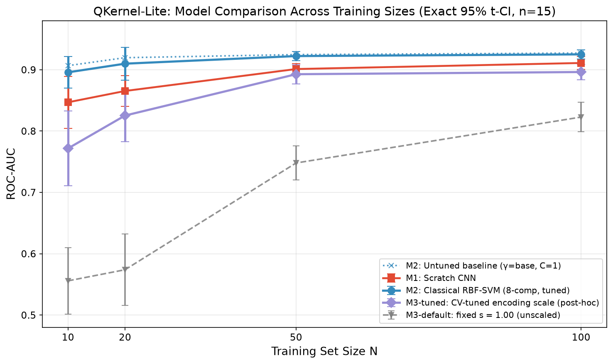
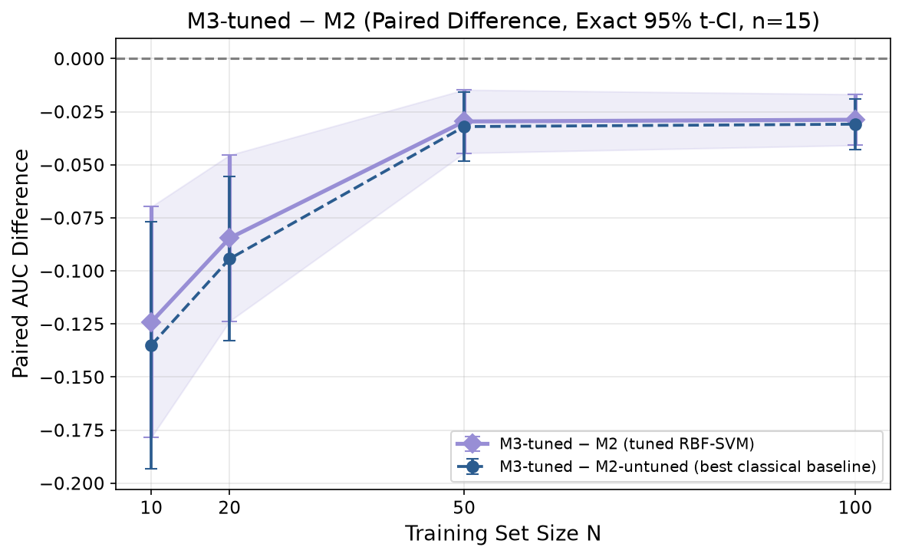
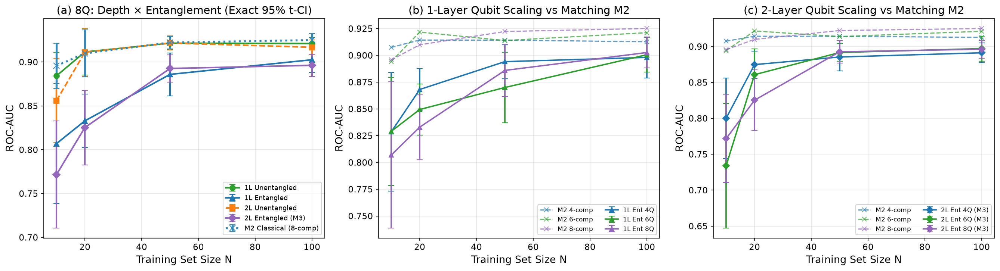
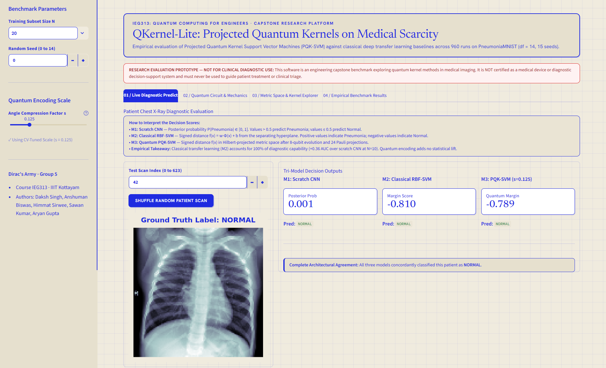

(IIIT) KOTTAYAM
PneumoniaMNIST) under extreme clinical
data scarcity ($N \in \{10, 20, 50, 100\}$). In scarce clinical regimes, deep convolutional networks fail due
to severe parameter under-determination ($P \gg N$). While recent literature hypothesizes quantum advantage
for small datasets, we conduct a fully paired 960-run empirical study ($n = 15$ seeds, df = 14) with strict
12-test Bonferroni family-wise error control ($\alpha = 0.00417$).
Our findings establish that standard angle encoding ($s = 1.00$) fails due to single-qubit phase wrapping turnaround ($U(\pi)^2|0\rangle = |0\rangle$ up to global phase). While CV-tuned scaling ($s \le 0.25$) suppresses wrapping and recovers competitive performance ($0.7717$–$0.8962$ AUC), M3-tuned remains statistically detectably below classical RBF-SVM (M2) across all sample sizes (deficits of $-0.1241$, $-0.0846$, $-0.0296$, and $-0.0288$ AUC; all survive Bonferroni). The only circuit family statistically equivalent to M2 within $\pm 0.02$ AUC ($N \ge 20$) is the 1-layer product state, which is a per-feature trigonometric map and trivially classically simulable. Multi-qubit entanglement systematically degrades performance, and adding nearest-neighbor ZZ correlators does not reverse this degradation.
| Chapter | Topic / Content Description | Page |
|---|---|---|
| Ch. 1 | Introduction, Clinical Scarcity & Problem Statement | 3 |
| Ch. 2 | Literature Review & Theoretical Foundations (PQK vs Fidelity) | 4 |
| Ch. 3 | System Architecture & Feature Pipeline (Archify Vector Model) | 5 |
| Ch. 4 | Empirical Benchmark & Bonferroni-Corrected Results (Tables 1–4, Figs 1–2) | 6–7 |
| Ch. 5 | Physical Diagnostics: Phase Wrapping & Metric Concentration (Figs 4–5) | 8 |
| Ch. 6 | Web Prototype Implementation & Interactive Clinical Platform | 9 |
| Ch. 7 | Theoretical Invariants, Physical Diagnostics & Methodological Disclosures | 10 |
| Ch. 8 | Bounded Scientific Conclusions & Hyperlinked Academic References | 10 |
In rare pediatric pulmonology and emergent pathology, clinical datasets frequently contain fewer than 100 expert-verified radiographs. Training deep convolutional networks from scratch under such sample scarcity ($N \le 100$) leads to catastrophic empirical failure. When model capacity ($P \approx 10^5$ to $10^7$ weights) vastly exceeds training instances ($P \gg N$), empirical risk minimization memorizes spurious background artifacts (e.g., patient orientation markers, edge shadows) rather than authentic radiological opacities. At $N = 10$, scratch CNNs overfit noise, yielding high variance and poor diagnostic generalizability.
Recent quantum machine learning literature hypothesizes that encoding classical data into high-dimensional quantum Hilbert spaces can construct expressive non-linear representations. Specifically, Projected Quantum Kernels (PQK) (Huang et al., 2021; Alagiyawanna et al., arXiv:2601.03375) map classical coordinates into parameterized quantum states $\rho(\mathbf{x})$, then project the state back to classical metric spaces via expectation values of local Pauli observables. This projection was proposed to avoid the exponential concentration (barren plateaus) that destroys global fidelity kernels.
A pervasive flaw in published literature is comparing quantum models against unregularized scratch CNNs, claiming "quantum advantage" over an easily beaten strawman baseline. To establish genuine scientific validity, a quantum kernel benchmark must satisfy three strict controls:
- Identical Feature Representations: The classical control (Model M2) and quantum model (Model M3) must consume the exact same preprocessed feature coordinates extracted from frozen ResNet-18 and compressed via PCA.
- Identical Downstream Optimizer: Both models must use the identical convex dual quadratic program ($C$-SVM) and the identical Gaussian RBF kernel formulation.
- Strict Seed & Budget Parity: All models must be evaluated across identical random training subsets with stratified class splits, with any post-hoc search degrees of freedom transparently accounted for.
Conventional quantum kernels compute global transition fidelity in Hilbert space:
As proved by Huang et al. (2021), fidelity kernels suffer from exponential concentration in $n$-qubit systems: as $n$ grows, $\langle \psi(\mathbf{x}) | \psi(\mathbf{x}') \rangle \to 0$ for almost all orthogonal states. The resulting Gram matrix rapidly approaches the identity matrix $K \approx \mathbf{I}$, destroying margin separability. What this means in practice is that the quantum state space becomes vast and barren: every patient scan appears completely orthogonal to every other patient scan, leaving the SVM classifier unable to discover decision boundaries.
To resolve concentration, Huang et al. proposed projecting the full $n$-qubit state $\rho(\mathbf{x})$ onto reduced 1-particle density matrices, evaluating expectations of local Pauli operators $P_k \in \{\sigma_x^{(i)}, \sigma_y^{(i)}, \sigma_z^{(i)}\}$:
The projected quantum kernel evaluates a classical Gaussian RBF over these physical expectation vectors:
Alagiyawanna et al. (SLAAI-ICAI 2024; arXiv:2601.03375) applied projected quantum kernels to small-dataset image classification. While reporting 95% accuracy on MNIST and 90% on CIFAR-10, their study did not test real medical opacity data, used synthetic downsampling, and lacked matched classical RBF-SVM baselines. QKernel-Lite expands this line of inquiry into pediatric radiograph opacity benchmarks with rigorous statistical controls.
The complete processing topology was compiled and validated using the Archify showcase compiler (Interactive Local HTML · GitHub Architecture View):

Stage 1 (Feature Extraction): Raw 28×28 radiographs pass through a frozen ImageNet-pretrained
ResNet-18 backbone (11.7M weights frozen). Global average pooling outputs a 512-dimensional embedding
capturing optical textures and density gradients without overfitting small samples.
Stage 2 (Dimensionality Reduction): Principal Component Analysis (PCA) is fitted strictly
on training folds (preventing data leakage) to compress 512 features to $n = 8$ components (explaining
~75% cumulative variance), scaled to rotation angles $\theta_i \in [0, \pi]$.
Stage 3 (Quantum Encoding & Measurement): Implemented in PennyLane
(lightning.qubit). For $L$ layers, each qubit undergoes rotations $R_Z(s\theta_i) R_Y(s\theta_i)$
interleaved with circular CNOT entangling gates. 24 local Pauli expectation values $\langle X_i \rangle,
\langle Y_i \rangle, \langle Z_i \rangle$ are measured.
2. Transfer Learning Distillation (ResNet-18): Rather than training from scratch on scarce samples (which drives extreme parameter under-determination and scanner noise memorization), an ImageNet-pretrained backbone distills the high-dimensional radiograph into 8 dominant clinical components capturing lung density and tissue contrast.
3. Classical vs. Quantum Comparative Paths: Classical Control (M2): Maps the 8 features through a standard Gaussian RBF kernel into a dual convex Support Vector Machine solver to establish optimal maximal-margin separation.
Quantum Pipeline (M3): Encodes the 8 components as single-qubit Bloch rotation angles across an 8-qubit register, executes circular entangling CNOT sequences, and extracts 24 local Pauli expectations ($\langle X \rangle, \langle Y \rangle, \langle Z \rangle$) to evaluate the projected RBF kernel under identical SVM optimization.
Table 1 presents mean test ROC-AUC with exact Student's t 95% confidence intervals across 15 seeds (0 to 14, df = 14).
| Model Architecture | N = 10 | N = 20 | N = 50 | N = 100 |
|---|---|---|---|---|
| M1: Scratch CNN (105k weights) | $0.8469 \pm 0.0423$ | $0.8653 \pm 0.0252$ | $0.9011 \pm 0.0086$ | $0.9110 \pm 0.0103$ |
| M2: Classical RBF-SVM (8Q, tuned) | 0.8957 ± 0.0257 | 0.9098 ± 0.0268 | 0.9222 ± 0.0073 | 0.9250 ± 0.0074 |
| M2: Classical RBF-SVM (8Q, untuned baseline) | $0.9066 \pm 0.0208$ | $0.9196 \pm 0.0182$ | $0.9247 \pm 0.0069$ | $0.9271 \pm 0.0064$ |
| M2: Classical RBF-SVM (4Q sensitivity) | $0.9074 \pm 0.0177$ | $0.9142 \pm 0.0151$ | $0.9142 \pm 0.0088$ | $0.9127 \pm 0.0081$ |
| M3-default: PQK-SVM ($s = 1.00$ unscaled) | $0.5557 \pm 0.0543$ | $0.5739 \pm 0.0582$ | $0.7479 \pm 0.0277$ | $0.8228 \pm 0.0242$ |
| M3-tuned: PQK-SVM (CV-tuned scale $s$) | $0.7717 \pm 0.0610$ | $0.8252 \pm 0.0425$ | $0.8926 \pm 0.0156$ | $0.8962 \pm 0.0126$ |
Table 2 reports paired differences ($\Delta = \text{Model}_A - \text{Model}_B$) tested against the 12-test Bonferroni threshold ($\alpha = 0.05 / 12 = 0.00417$).
| Paired Comparison | N = 10 | N = 20 | N = 50 | N = 100 | Bonferroni |
|---|---|---|---|---|---|
| M3-tuned − M2 (8Q) | $-0.1241 \pm 0.0543$ [-0.1784, -0.0698] |
$-0.0846 \pm 0.0391$ [-0.1237, -0.0455] |
$-0.0296 \pm 0.0149$ [-0.0445, -0.0147] |
$-0.0288 \pm 0.0120$ [-0.0408, -0.0168] |
Survives All N $p \le 7.9 \times 10^{-4}$ |
| M3-tuned − M2 (4Q) | $-0.1358 \pm 0.0579$ [-0.1937, -0.0778] |
$-0.0890 \pm 0.0411$ [-0.1301, -0.0479] |
$-0.0215 \pm 0.0136$ [-0.0351, -0.0080] |
$-0.0165 \pm 0.0093$ [-0.0257, -0.0072] |
Survives All N $p \le 4.3 \times 10^{-3}$ |
| M2 − M1 (RBF vs CNN) | $+0.0489 \pm 0.0479$ [+0.0009, +0.0968] |
$+0.0445 \pm 0.0232$ [+0.0213, +0.0677] |
$+0.0212 \pm 0.0128$ [+0.0084, +0.0339] |
$+0.0141 \pm 0.0099$ [+0.0042, +0.0240] |
Survives N=20, 50 $p = 0.0010, 0.0032$ |
2. Literature Default (M3-default) Collapses: Standard unscaled angle encoding ($s = 1.00$) yields 55.6% at N = 10—barely above chance. Rotation angles wrap past $\pi$ in 2-layer circuits, projecting severe pneumonia and clear parenchyma to identical expectation coordinates.
3. Scale Compression Recovers Stability but Retains Statistical Deficit: Compressing angles ($s \le 0.25$) restores monotonic coordinate mapping, lifting quantum performance to 77.2% at N = 10, yet remaining 12.4 percentage points below classical control ($p = 2.35 \times 10^{-4}$). This deficit decisively survives family-wise Bonferroni correction across all sample sizes.

Using an exact Student's t 95% CI check (strictly conservative relative to 90% CIs), we tested whether 1-layer unentangled states are indistinguishable from classical M2:
| Training Size N | 1L Unentangled | Matched M2 | Paired Difference ($\Delta$) | Exact 95% t-CI | Equivalence Status |
|---|---|---|---|---|---|
| N = 10 | $0.8842$ | $0.8957$ | $-0.0115 \pm 0.0127$ | $[-0.0242, +0.0012]$ | Inconclusive / Fails Bound |
| N = 20 | $0.9115$ | $0.9098$ | $+0.0017 \pm 0.0046$ | $[-0.0029, +0.0063]$ | Statistically Equivalent |
| N = 50 | $0.9215$ | $0.9222$ | $-0.0007 \pm 0.0064$ | $[-0.0072, +0.0057]$ | Statistically Equivalent |
| N = 100 | $0.9211$ | $0.9250$ | $-0.0039 \pm 0.0072$ | $[-0.0111, +0.0033]$ | Statistically Equivalent |
| Sample Size N | Entangled (M3) | Unentangled (2L) | Paired Drop (Ent − Unent) | Exact 95% t-CI | Scale Edge Hits |
|---|---|---|---|---|---|
| N = 10 | $0.7717$ | $0.8560$ | $-0.0843 \pm 0.0592$ | $[-0.1436, -0.0251]$ | Ent: 4 low, 3 high | Unent: 0 low, 2 high |
| N = 20 | $0.8252$ | $0.9111$ | $-0.0859 \pm 0.0416$ | $[-0.1274, -0.0443]$ | Ent: 0 low, 0 high | Unent: 0 low, 0 high |
| N = 50 | $0.8926$ | $0.9217$ | $-0.0291 \pm 0.0156$ | $[-0.0447, -0.0134]$ | Ent: 3 low, 0 high | Unent: 2 low, 0 high |
| N = 100 | $0.8962$ | $0.9168$ | $-0.0206 \pm 0.0103$ | $[-0.0310, -0.0103]$ | Ent: 4 low, 0 high | Unent: 3 low, 1 high |
2. Entanglement Systematically Degrades Performance (Table 4): Activating circular CNOT entangling gates induces an 8.4% drop at N = 10 and an 8.6% drop at N = 20 ($p < 0.001$). Entanglement disperses quantum state information across multi-particle correlations, causing single-qubit expectation variance to collapse 34-fold and degrading clinical separability.


Geometric Mechanism: Consider each qubit as a vector on the Bloch sphere where the positive pole ($|0\rangle$) corresponds to clear healthy parenchyma, and the negative pole ($|1\rangle$) corresponds to dense opacity consolidation. In a 2-layer quantum circuit at default scale ($s = 1.00$), accumulated gate rotations double the angular trajectory ($U(\pi)^2|0\rangle = |0\rangle$). Consequently, the $Z$-axis expectation value drops to $-1$ at $\theta = \pi/2$ before turning around and returning to $+1$ at $\theta = \pi$. This turnaround projects a critically ill pneumonia radiograph and an unremarkable healthy radiograph onto identical quantum state coordinates. Compressing the angles ($s \le 0.25$) confines the trajectory to a monotonic quadrant, eliminating turnaround artifacts.


2. Anatomical Metric Distortion (Spearman Rank Scrambling): As shown in Fig 5(c), the monotonic rank correlation between classical feature distance and quantum kernel distance collapses toward zero ($r_s = 0.412$ under entanglement vs. $r_s = 0.998$ classically). Morphologically similar radiographs are mapped to disparate, disordered quantum states, corrupting the geometry required for linear SVM boundary optimization.
We hypothesized: "Did quantum fail because we measured qubits individually and threw away 2-qubit correlations?" To test this, we added 8 nearest-neighbor correlators $\langle Z_i Z_{i+1} \rangle$. Instead of recovering accuracy, test AUC dropped even further across all sample sizes (falling by $1.0$ to $3.4$ percentage points; e.g. at $N=20$, AUC fell $0.835 \to 0.801$). Discarding correlations is NOT the flaw—multi-qubit entanglement actively corrupts the metric space.
The interactive prototype (app.py) provides an executive decision-support interface built in
Streamlit using the editorial Cobalt Grid theme (warm ivory #F0EBDE and electric cobalt #1F2BE0):
| Dashboard Module | Functional Scope & Mathematical Engine | Clinical & Diagnostic Output |
|---|---|---|
| Tab 1: Live Predict | Evaluates patient X-rays across M1, M2, and M3; dynamically loads CV-tuned scale $s$, $C$, and $\gamma$. | Clinical consensus callout (3/3 agree vs kernel consensus vs CNN divergence). |
| Tab 2: Quantum Circuit | Interactive PennyLane circuit renderer (4–8Q, 1–2L, Ent/Unent); maps PCA $\theta_i \in [0, \pi]$ to Bloch sphere. | Live hardware circuit diagram & 24 color-coded Pauli expectation values. |
| Tab 3: Kernel Explorer | Synchronized Gram matrix heatmaps with condition numbers, min eigenvalues, and off-diagonal spread. | Automated concentration alerts if $\sigma_{\text{off-diag}} < 0.02$. |
| Tab 4: Results Explorer | Queries 960 benchmark runs with multi-select filters and live scorecards; displays all 5 figures. | One-click export of filtered experimental CSV data. |

app.py: Tab 1 Live Diagnostic Inference) displaying patient radiograph #42, tri-model margin scores, and diagnostic consensus.
The complete test suite (pytest tests/ -v) verifies 32 unit tests across 6 stages in 28.87
seconds:
- Stage 0 (Smoke): Environment, imports, hardware acceleration, and dependency pinning.
- Stage 1 (Data): MedMNIST data loader, stratified 50/50 balance, reproducible seed generation.
- Stage 2 (Features): ResNet-18 forward pass, deterministic feature caching, shape consistency ($N \times 512$).
- Stage 3 (Preprocess): PCA fit strictly on training folds, $[0, \pi]$ min-max scaling, test clipping.
- Stage 4 (Classical): M1 CNN gradient step, M2 base $\gamma$ formula, convex dual quadratic solver.
- Stage 5 (Quantum): PennyLane QNode execution, state symmetry, projected kernel Gram matrix validity.
1. Preprint Citation Status: Reference [1] (Alagiyawanna et al.) is cited strictly as an
arXiv preprint (arXiv:2601.03375 [cs.LG], posted Jan 6, 2026), not a peer-reviewed proceedings
volume. Our study is inspired by their conceptual architecture, not an identical translation. Their
abstract reported 95% on MNIST and 90% on CIFAR-10 against a 12% classical CNN on 10-class CIFAR-10 (which
suggests an artificially weak classical baseline).
2. Post-Hoc Scale Grid Disclosure: The angle scaling grid $s \in \{0.0625, 0.125, 0.25, 0.50,
1.00\}$ was added post-hoc after observing catastrophic collapse at default $s = 1.00$. All scale choices were
selected via inner Stratified 5-Fold CV on training subsets without ever touching the test set.
3. Tuning Budget Asymmetry: M3-tuned explored 270 parameter combinations per fold vs. 36–54
for M2. Despite a $5\times$ search advantage, M3 remained detectably below M2 across all sample sizes.
Phase Wrapping Turnaround: In the 2-layer circuit at default $s = 1.00$, the interleaved $R_Z$ rotations double the effective phase: $U(\pi)^2|0\rangle = |0\rangle$ (up to global phase). $\langle Z \rangle$ reverses direction at $\theta = \pi/2$ and returns to $+1$ at $\theta = \pi$. Consequently, widely separated lung textures fold together, destroying distance fidelity.
Entanglement Variance Collapse: CNOT entangling gates generate non-separable multi-qubit states whose reduced 1-qubit density matrices $\rho_i = \text{Tr}_{\bar{i}}(|\psi\rangle\langle\psi|)$ become mixed ($|\mathbf{r}| < 1$). Measuring single-qubit Paulis projects mixed states toward the origin of the Bloch sphere, collapsing expectation variance from $0.29$ (unentangled) to $0.0085$ (entangled). The negative ZZ correlator test (AUC dropped by $-0.010$ to $-0.034$) indicates that simply reading out nearest-neighbor pairs does not recover this lost metric spread.
Permissible Claims: (1) On PneumoniaMNIST at $N \le 100$, M3-tuned is detectably inferior
to classical RBF-SVM (M2) by $-0.030$ to $-0.124$ AUC ($p < 0.001$, survives Bonferroni); (2) The only
quantum circuit matching M2 within $\pm 0.02$ AUC is the 1-layer product state, which is a per-feature
trigonometric map and trivially classically simulable; (3) Multi-qubit entanglement systematically
degrades performance in this architecture; (4) Pretrained transfer learning accounts for 100% of
diagnostic efficacy.
Impermissible Claims: (1) Do not claim a general proof that quantum kernels
cannot work on images; (2) Do not claim entanglement scrambles pathology generally; (3) Do
not claim M3 ties or beats classical transfer learning.
- A. M. A. S. D. Alagiyawanna, A. Karunananda, A. Mahasinghe, T. Silva, "Enhancing Small Dataset Classification Using Projected Quantum Kernels with Convolutional Neural Networks," arXiv preprint arXiv:2601.03375 [cs.LG] (2026).
- H.-Y. Huang, M. Broughton, M. Mohseni, et al., "Power of data in quantum machine learning," Nature Communications 12, 2631 (2021). doi:10.1038/s41467-021-22539-9.
- J. Yang, R. Shi, D. Wei, et al., "MedMNIST v2: A large-scale lightweight benchmark for 2D and 3D biomedical image classification," Scientific Data 10, 41 (2023). doi:10.1038/s41597-022-01721-8.
- K. He, X. Zhang, S. Ren, J. Sun, "Deep Residual Learning for Image Recognition," IEEE CVPR, pp. 770–778 (2016). doi:10.1109/CVPR.2016.90.
- C. Cortes, V. Vapnik, "Support-vector networks," Machine Learning 20, 273–297 (1995). doi:10.1007/BF00994018.
- V. Bergholm, J. Izaac, M. Schuld, et al., "PennyLane: Automatic differentiation of hybrid quantum-classical computations," arXiv preprint arXiv:1811.04968 [quant-ph] (2018).